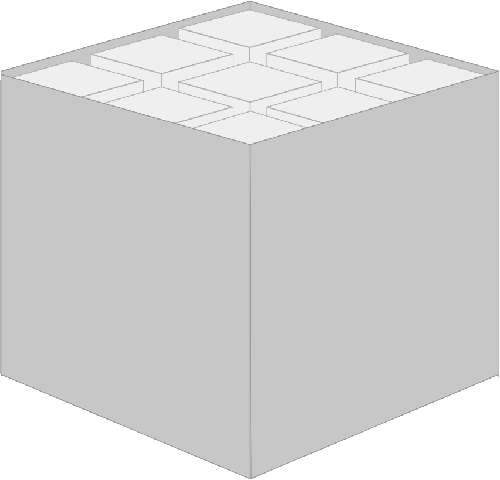
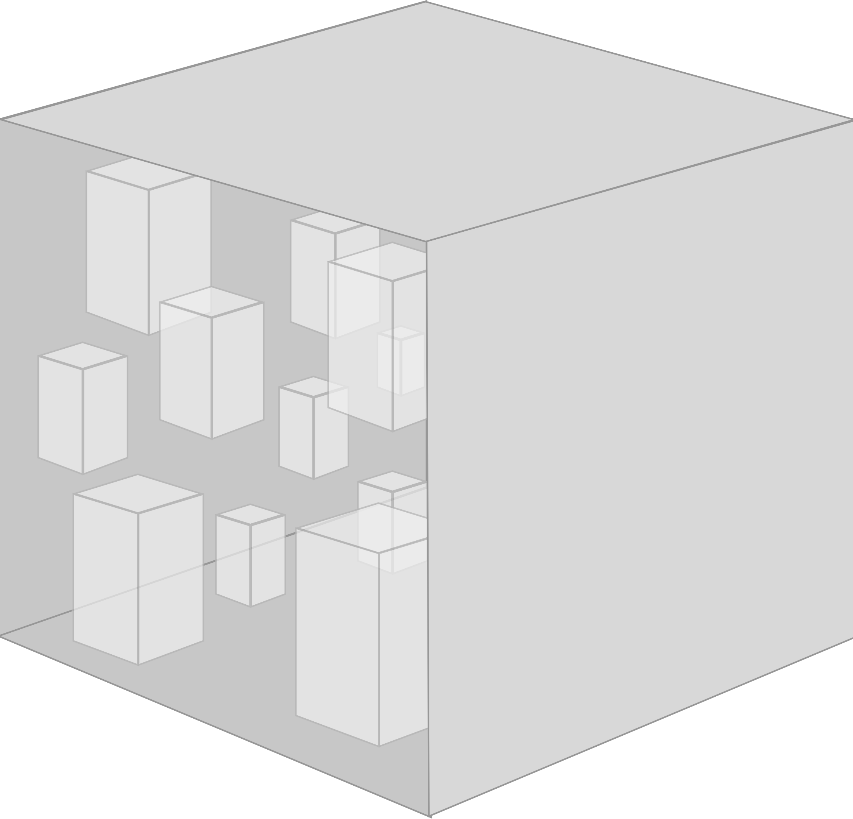
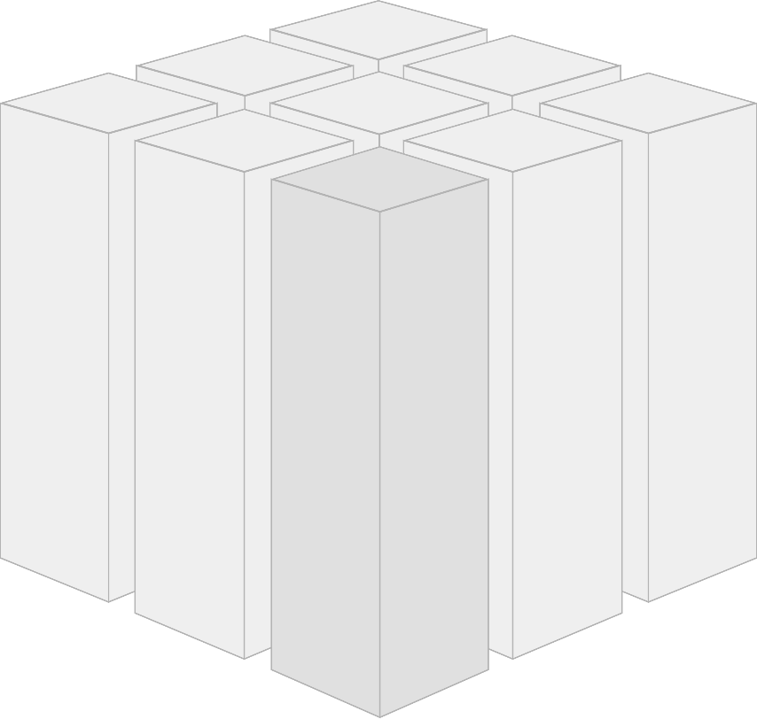
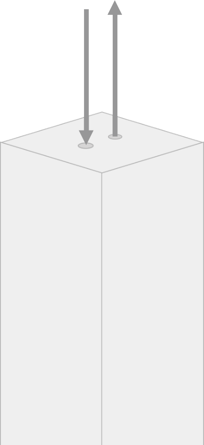
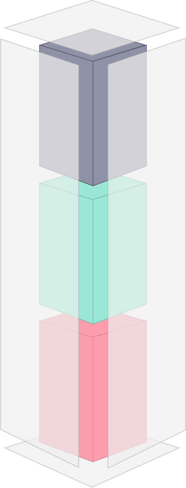
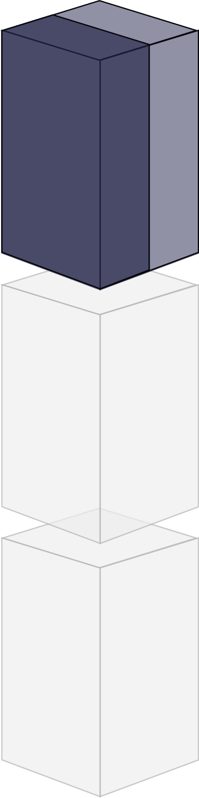

Each SCS is an autonomous web application. For the SCS's domain, all data, the logic to process that data and all code to render the web interface is contained within the SCS. An SCS can fulfill its primary use cases on its own, without having to rely on other systems being available.
Each SCS is owned by one team. This does not necessarily mean that only one team can change the code, but the owning team has the final say on what goes into the code base, for example by merging pull-requests.
Communication with other SCSs or 3rd party systems is asynchronous wherever possible. Specifically, other SCSs or external systems should not be accessed synchronously within the SCS's own request/response cycle. This decouples the systems, reduces the effects of failure, and thus supports autonomy. The goal is decoupling concerning time: An SCS should work even if other SCSs are temporarily offline. This can be achieved even if the communication on the technical level is synchronous, e.g. by replicating data or buffering requests.
An SCS can have an optional service API. Because the SCS has its own web UI, it can interact with the user — without going through a UI service. However, an API for mobile clients or for other SCSs might still be useful.
Each SCS must include data and logic. To really implement any meaningful features both are needed. An SCS should implement features by itself and must therefore include both.
An SCS should make its features usable to end-users via its own UI. Therefore the SCS should have no shared UI with other SCSs. SCSs might still have links to each other. However, asynchronous integration means that the SCS should still work even if the UI of another SCS is not available.
To avoid tight coupling an SCS should share no business code with other SCSs. It might be fine to create a pull-request for an SCS or use common libraries, e.g. database drivers or oAuth clients.
To make SCSs more robust and improve decoupling shared infrastructure can be minimized. E.g. a shared database make fail safeness and scalability of the SCSs depend on the central database. However, due to e.g. costs a shared database with separate schemas or data models per SCS can be a valid alternative.
A monolith contains numerous things inside of a single system …
Various Domains
User Interface Business Logic Persistence
… as well as a lot of modules, components, frameworks and libraries.
With all these layers in one place, a monolith tends to grow.
With all these layers in one place, a monolith tends to grow.
If you cut a monolithic system along its very domains …
… and wrap every domain in a separate, replaceable web application …
… then that application can be referred to as a self-contained system (SCS).
On its outside, an SCS is a decentralized unit that is communicating with other systems via RESTful HTTP or lightweight messaging.
Therefore self-contained systems can be individually developed for different platforms.
An SCS contains its own user interface , specific business logic and separate data storage .
The user interface consists of web technologies that are composed according to ROCA principles.
Besides a web interface a self-contained system can provide an optional API.
The business logic part only solves problems that arise in its core domain. This logic is only shared with other systems over a well defined interface.
You would like to use this content?
Sure, SCS is licensed under the creative commons attribution-sharealike 3.0 unported license.
You have comments, questions?
Checkout the FAQ or join the discussions.
You would like to contribute?
Go to Github.